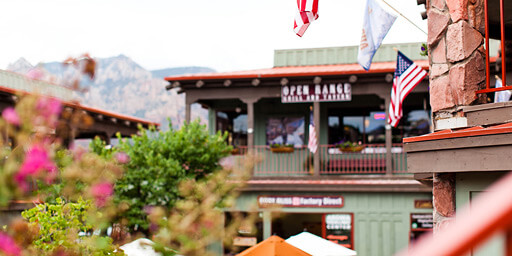

Причины посещения
Настоящий городок
№1Седона не аттракцион для туристов, там течет своя жизнь
 Жилье
Рекомендуем пожить в настоящем мотеле, все как в кино!
Сувениры
Не только китайского,
но и местного производства!Еда
Всегда заказывайте фирменнный бургер, Вы не разочаруетесь!
Там есть
№2
мост дьяволаДа, по нему можно пройти! Если вы осмелитесь, конечно

Небольшая площадь
№3Все интересные места находятся очень близко
Красивая дорога
№4Ехать в Седону из Лас- Вегаса совсем не скучно!
Мало туристов
№5Большинство едет в гранд каньон и толпится там
Заинтересовались?
Укажите предполагаемые даты поездки,
и мы покажем вам лучшие предложения гостиниц в седоне